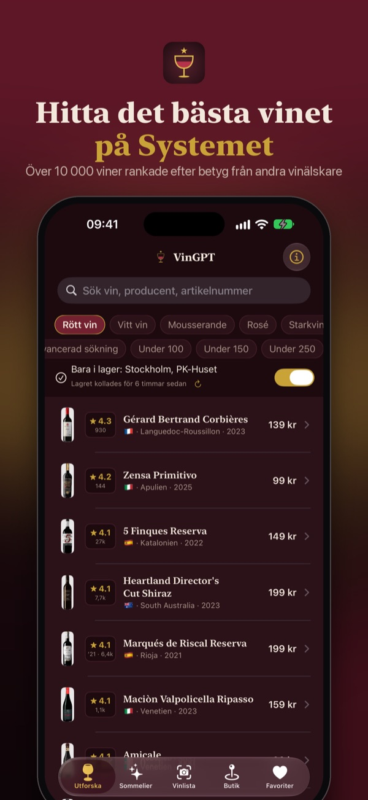
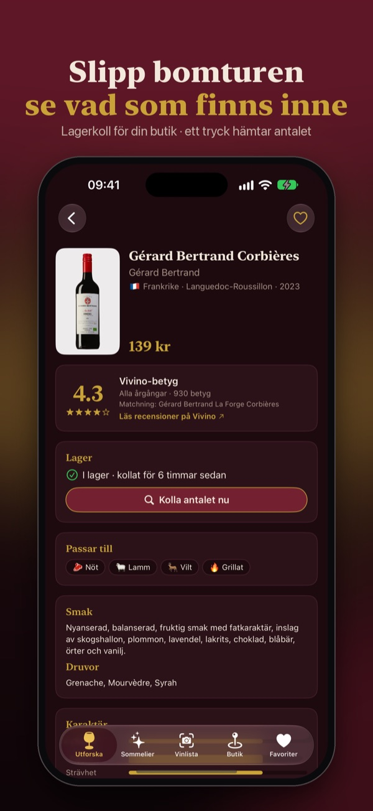
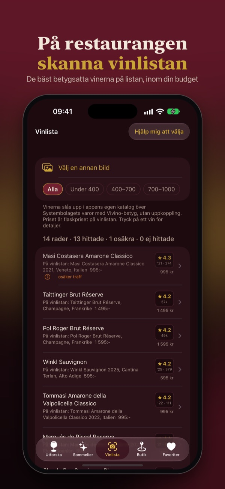

VinGPT
Hitta det bästa vinet på ditt Systembolag
Välj din Systembolagsbutik och se vinerna som finns i lager där, rankade efter betyg från tusentals andra vinälskare. Kolla antalet flaskor direkt från Systembolaget innan du går. På restaurangen: fotografera vinlistan och se de bästa vinerna på den.
Ladda ned gratis i App StoreiPhone med iOS 17 eller senare · inget konto · ingen reklam



- I lager i din butik, rankat. Filtrera på pris, vintyp och vad du ska äta.
- Kolla lager. Antalet flaskor hämtas från Systembolaget när du trycker. Slut? Appen visar butiker i närheten som har vinet.
- Skanna vinlistan. Bilden läses i telefonen och vinerna rankas inom den prisklass du vill betala.
- Fråga sommeliern. ”Vad passar till lamm under 200 kr?” — svar bland vinerna i din butik (kräver Apple Intelligence).
Support för VinGPT i Sverige
Varför visar appen ett annat lager än butiken har?
Lagerlistan (vilka viner butiken har i lager) uppdateras löpande och visar när den senast kollades. Listan säger om ett vin finns i lager, men inte hur många flaskor. Antalet flaskor hämtas direkt från Systembolaget när du trycker ”Kolla lager” på vinkortet. Dra nedåt i listan för att uppdatera lagerlistan.
Varför saknar ett vin betyg?
Betyg finns för de flesta viner i butikernas sortiment. Viner i beställningssortimentet och helt nya årgångar kan sakna betyg — då står det att vinet saknar betyg, i stället för att appen gissar.
Sommeliern svarade konstigt eller fel
Sommeliern använder Apples språkmodell direkt på telefonen (kräver iPhone 15 Pro eller senare med Apple Intelligence). Den kan bara föreslå viner som finns i Systembolagets sortiment, och motiveringen vid varje vin kommer från Systembolagets egna beskrivningar. Blir ett svar ändå fel, använd ”Skicka feedback” under ⓘ i appen — det hjälper oss mycket.
Behöver jag ett konto?
Nej. Ingen inloggning och ingen registrering. Favoriter följer ditt eget iCloud automatiskt.
Är VinGPT en del av Systembolaget?
Nej. VinGPT är en fristående app som inte är ansluten till Systembolaget. Appen säljer inte alkohol och har ingen köpfunktion.
Utgivare
VinGPT ges ut av Siphon AS (org.nr. 998 610 672), Jacob Aalls gate 14A, 0368 Oslo, Norge.
Kontakt
Feedback och felrapporter:
support.vingpt@vingpt.no
(eller använd ”Skicka feedback” i appen — då följer version och
katalogdatum med automatiskt).